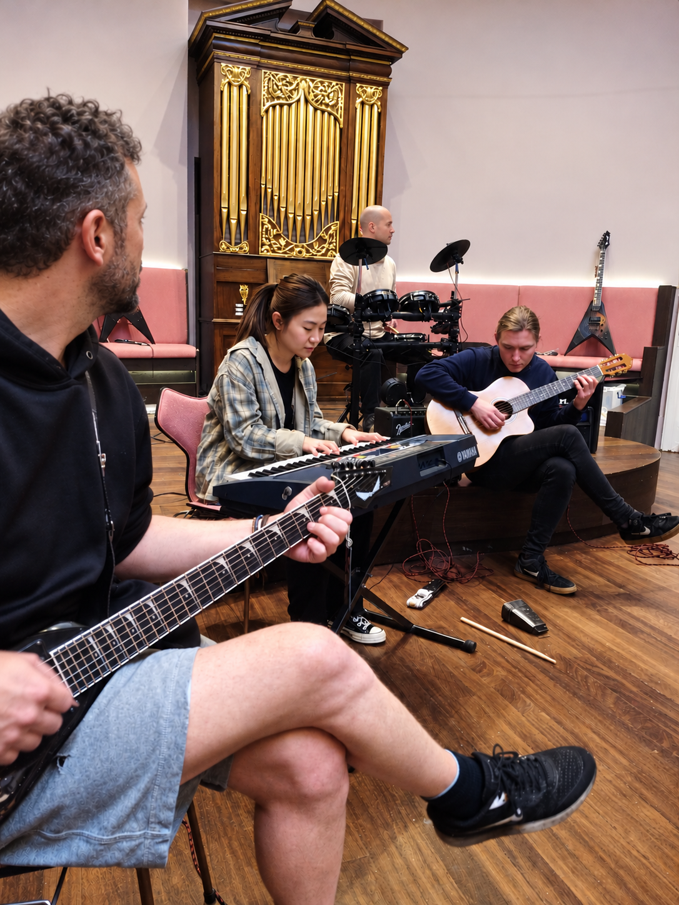
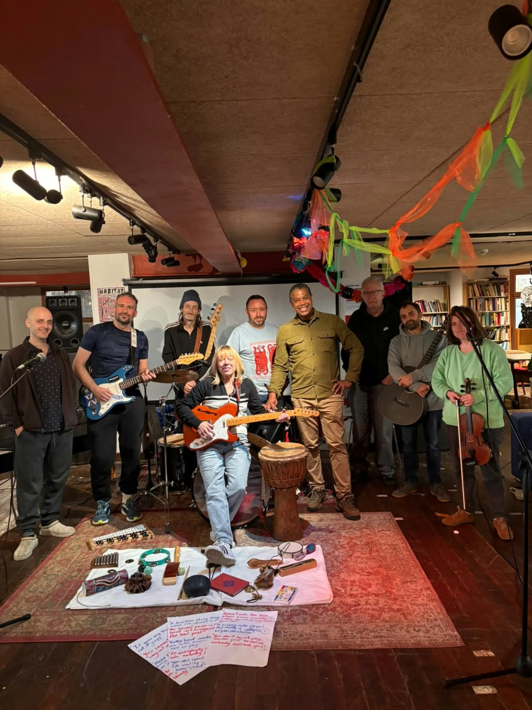
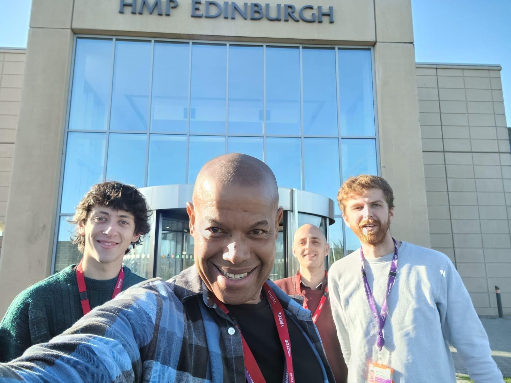
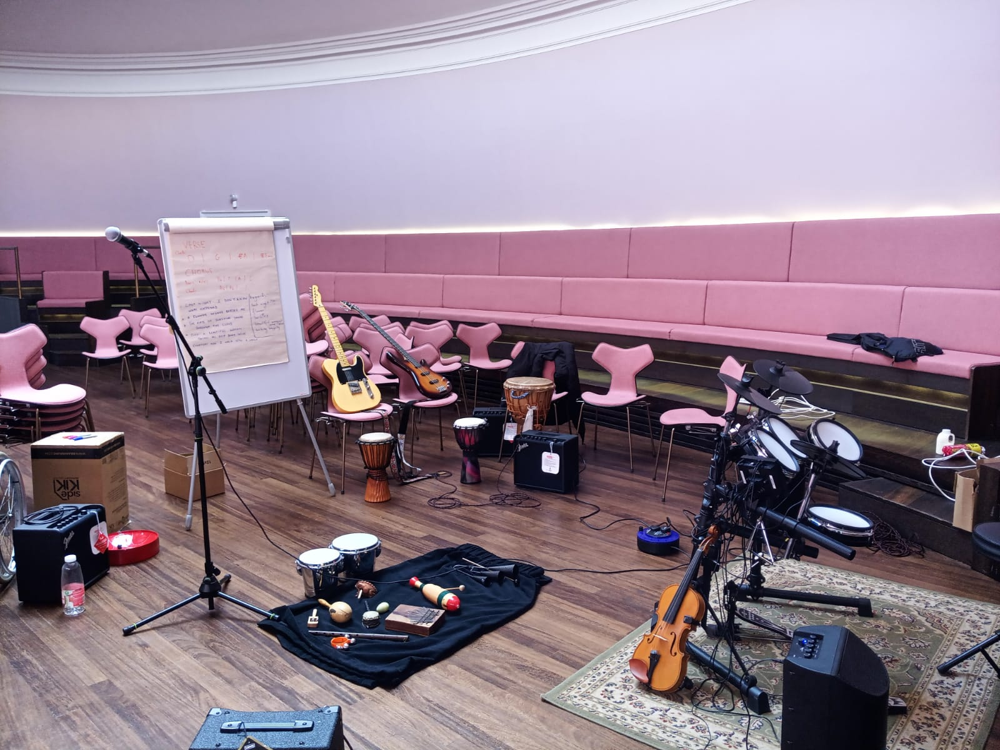

WHAT WE DO
Music made together.

At Recovery Through Music, people come together to play, sing, write, improvise, listen and create.
People arrive with very different relationships to music. Some have played for years. Some are picking up an instrument for the first time. Others might begin by listening, tapping a rhythm or simply seeing what happens.
There is nothing to keep up with and nothing to prove.
You can have a go, make mistakes, change your mind, try something new — or take your time. Along the way, you might pick up a chord, discover an instrument, learn something from someone else or surprise yourself with what you can do.
There is more than one way to be part of the music.
The weekly community is at the heart of RTM. It is where the approach began, and where it continues to grow.
THE WEEKLY COMMUNITY
Something grows when people come back.
RTM began as a weekly gathering, and the weekly community remains at the heart of what we do.
People arrive differently each time. You might come ready to play, or you might have had a difficult week and need a little time to find your way into the room. There is space for both.
Over time, people get to know one another. Songs return. Ideas develop. Someone who listened last week might pick up an instrument this week. Someone else might bring something that changes where the music goes.
The community isn't something you simply attend. The people who come help shape what it becomes.

DIFFERENT SETTINGS
The approach can travel.
The weekly community is at the heart of RTM, but the way we work can take shape in different places.
RTM has delivered music sessions in HMP Edinburgh and HMP Perth, bringing the same emphasis on participation, creativity and connection into prison settings. Principles developed through RTM have also informed work with asylum seekers and refugees.
The setting changes. The invitation to participate, create and contribute remains.

WORKING WITH PARTNERS
Start with the people, not the programme.
RTM works with organisations that want to create meaningful opportunities for people to participate, connect and make music together.
We begin with a conversation about the people, the setting and what might be useful. From there, we can develop workshops or longer pieces of work that draw on the RTM approach while responding to the particular community.
Interested in working with RTM? Get in touch →IN THE ROOM
There are many ways into the music.
No two RTM sessions are quite the same. What happens grows from the people in the room, what they bring with them and what begins to emerge together.
PLAY · SING · WRITE · IMPROVISE · RECORD · LISTEN · REFLECT · CONNECT

FIND YOUR WAY INTO RTM
Interested in taking part, referring someone or working with RTM?
Get involved →